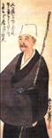

Richard S. Straw
Cary, North Carolina, USA
"Little Prayers" and the Bluebird: Thomas Merton on Haiku
He was a poet before he became a Trappist monk, and he remained a poet-monk for the rest of his life. But he was never a haiku poet, even though he read haiku and talked with others about them. Between December 10, 1941, when Thomas Merton entered the Abbey of Gethsemani near Bardstown, Kentucky, and December 10, 1968, when he exited this world in Bangkok, Thailand, accidentally electrocuted in his room at the Oriental Hotel, nine main collections of his poems were published, each by New Directions:
• Thirty Poems (1944),
• A Man in the Divided Sea (1946),
• Figures for an Apocalypse (1947),
• The Tears of the Blind Lions (1949),
• The Strange Islands (1957),
• Original Child Bomb (1962),
• Emblems of a Season of Fury (1963),
• Cables to the Ace (1968), and
• The Geography of Lograire (1968).
A private edition of his Early Poems, 1940-42, was also printed in Lexington, Kentucky, by the Anvil Press in 1971. These books were all gathered in 1977 in The Collected Poems of Thomas
Merton, a 1,048-page tome that also includes his previously unpublished Sensation Time at the Home (1968), as well as his uncollected poems, humorous verse, translations of his French poems, his translations of others' poems, drafts and fragments of poems, and a selection of his concrete poems. What would have made the volume "complete" would have been a selection of his drawings and photographs, but those have been published elsewhere.[1]
In an editorial for the summer 1990 issue of The Merton Seasonal (Volume 15, Number 3) titled "Thomas Merton and the East," Robert E. Daggy writes:
Merton dabbled in Eastern calligraphic art, producing dozens of calligraphy-like drawings, and he experimented with Eastern literary forms, sometimes with masterful effect as in his "interpretations" of Taoist sayings in The Way of Chuang Tzu. There is not much evidence in his surviving poetry that Japanese haiku (a seventeen syllable poem) engrossed him or that he played with the form in English. But he did include a "Haiku Section" in the fourth and final issue of his magazine, Monks Pond, and number of poets (most notably Ron Seitz) have been inspired to haiku by Merton[2]
Ron Seitz taught creative writing at the University of Louisville and Bellarmine University in
Louisville, Kentucky, from the early 1960s through the late 1980s and was a personal friend of Thomas Merton. He wrote several books to honor Merton and their friendship, including a memoir, Song for Nobody: A Memory Vision of Thomas Merton, and two chapbooks, The
Gethsemani Poems: from within the walls of the Abbey of Gethsemani the monastery at Trappist,
Kentucky home of Thomas Merton monk & poet and Monks Pond Old Hermit Hai!: A Haiku Homage to Thomas Merton.[3]
The 50 haiku in Seitz's haiku collection are accompanied by 13 calligraphic photoengravings prepared from his black-and-white photographs and an introductory free verse poem titled "Haiku Way." Seitz's memoir includes a number of his own haiku and remembered conversations that he had with Merton about haiku, photography, and other topics over a 10-year time span. No haiku written by Merton are shared in either book, although
Merton's haiku-like "Song for Nobody" appears next to the foreword by Brother Patrick Hart, O.C.S.O., of the Abbey of Gethsemani, who states, "At last here is the Merton I knew."
Early in his memoir, while listening to the liturgy at Merton's funeral mass, Ron Seitz remembers when Merton had listened to him recite his haiku near the hermitage in Gethsemani's woods:
Haiku. The short spontaneous poems that Tom and I so loved. "Little prayers," he sometimes called them. . . ."Good! Like tiny pieces of candy on the tongue," he said one morning as I was dropping them like pebbles into Monks Pond. Smiles plopping into ripples of laughter on the water. — No gloom then [p. 41].
At another time, while sitting at Merton's desk at the hermitage, Seitz has another memory:
I remember Tom telling me that neither of us could ever write haiku poems, really good "true" ones, because "After all, we're not Eastern now, are we? I mean, our entire consciousness, our way of living, has been formed here in the West. And that's something you just can't change overnight, if ever. No matter how much reading or Zen exercises we practice, eh" [p. 88].
Later in his memoir, Seitz recalls Merton's teaching him how to see and hear, with applications not only for taking photographs, but also for writing haiku:
Tom would go on to teach me, when photographing (or any other time, for that matter) to stop looking and to begin seeing! — Because looking means that you already have something in mind for your eye to find; you've set out in search of your desired object and have closed off everything else presenting itself along the way. But seeing is being open and receptive to what comes to the eye; your vision total and not targeted. . . . The same holds for listening as opposed to hearing! — You can't approach sound or music already knowing or expecting what's to come, excluding all else surrounding it. That way you're making it do, not allowing it to be. . . . You can't appreciate anything around you if you're always self-conscious, thinking, blotting out everything else but you. . . . As usual, Tom was right about all this. And in a short time I was taking 'Zen photos' of weeds, limbs, rocks — all sorts of calligraphy. . . . And, now, I take very few pictures because I have to wait (just as in writing haiku) for it to present the image to me [pp. 133 and 134].
on the long clean road
stretching away to darkness
the first moon shadows[4]
In June 1968, Merton invited Seitz along with some of his other close friends to a big picnic at Monks Pond. He wanted Seitz to meet his closest friend, the poet Robert Lax. Merton and Lax had known each other since their shared first year at Columbia University in 1935, and their last reunion was that summer.[5] In his Song for Nobody (pp. 57-64), Seitz recounts the lively and playful way that Lax and Merton conversed and interacted with each other and how Lax responded enthusiastically when Seitz recited at Merton's request several of his haiku, especially this one:
on winter dead grass
the bird's skinny little legs
—far off a dog barks
Jerry Gill also knew Thomas Merton. In fact, along with about 250 other monks, he lived at the Abbey of Gethsemani from May 1962 to January 1970. Married now and living in Hertford,
North Carolina, he began writing haiku as a 24-year-old Trappist brother in 1964 at Gethsemani.
In the introduction to his 2006 haiku chapbook, Shadows and Light (Excelsior Springs, MO: Shadow Poetry), Gill describes his history as a haiku poet:
One of the senior monks (Dom John Eudes Bamberger, O.C.S.O.[6]) had suggested that I look into Buddhism and haiku to help me expand intellectually.[7] The monastery library had R. H. Blyth's monumental four-volume collection of traditional Japanese haiku, as well as many books on Buddhism and Zen. So I read and read and pondered and tried writing haiku of my own. I used to pin a verse on the monastery bulletin board every now and then, and I even got permission to send some verses out for publication. I've been writing and publishing haiku ever since. . . .
. . . The monastery of Gethsemani gave birth to, and patiently, lovingly nurtured, the shadows and light of this gawky, tentative monk/poet. And so I gratefully dedicate this collection to that beauteous, understanding, and spacious sanctuary among the fields and knobs of Nelson County, Kentucky. The very first verse is right out of those years in that ever-remembered place.
in the holy fragrance
of the blossoming orchard
the monastery bell
Merton was Gill's novice master from 1962 to 1964. "As a monk," Gill says, "I knew Merton as
'Father Louis.' We never referred to him as Thomas Merton." (Gill's monastic name was Brother Mary Matthias.) "Thomas Merton (Father Louis)," Gill corrects himself, "had nothing to do with my writing haiku. I don't recall ever showing them to him. . . . I DID submit some to Harold Henderson's pamphlet [Haiku West, edited and published by Leroy Kanterman in New York City]. . . and to a magazine in Canada [perhaps Eric Amann's Haiku]." Gill reflects, "If I were still in the novitiate, Merton would have [had] to approve what I was doing. I don't remember the timeline." In 2007, Gill wrote a haibun (i.e., poetic prose with haiku[8]) about his memories of his life as a monk, "Once Upon a Time,"[9] which is reprinted here:
Once upon a time, a gray, balding man now 66 was a young Trappist monk at the monastery of Gethsemani in Kentucky. Early Spring here in eastern North Carolina where he now lives, he especially and fondly remembers those glorious early Spring mornings out in the apple orchard 40 years ago.
He remembers being out there in the crisp, cool dawn meticulously pruning the awaiting trees with a hand clipper, a long-handled "lopper," a pole saw, and, of course, a wooden ladder.
He remembers the sun's rising over the distant, wooded knobs.
He remembers the ethereal calls of the redwing blackbirds and their hustle and bustle everywhere beneath the sun.
He remembers the mingled fragrances of the apple, cedar, and evergreen trees, of the early flowers, of the calf and horse pastures, and of the warming, greening grass.
He remembers the distant, regular tolling of the bell.
He remembers pausing every now and then in his work to worship by taking it all in, and by breathing deeply the warm, fragrant air.
He remembers the silence of this holy place.
He remembers living that life for God alone with 250 other monks who also lived for God alone.
For he knew that a monk is an insignificant, fragile human being who lives for God alone along with all the rest of this verdant, blossoming, divine creation.
Now....
dozing in spring warmth
a former monk wakes up
when a church bell rings
For the past 10 years or so, usually by e-mail and "snail mail" and sometimes in person, Jerry Gill has shared with me, among other things, his thoughts on Merton's understanding of haiku. Besides being an accomplished haiku poet, Gill is an ardent lover of Mozart's music and a marathon runner to boot. I once asked him if Merton ever wrote any haiku:
As far as I know, he never wrote any, or at least I've never seen any he wrote. Maybe one day someone will discover some of his haiku and publish them, if he ever wrote any. Every aspect of Merton's life has been written about. I've read very many of his published books, my favorite being The Sign of Jonas, but haven't read that many books about Merton. However, he's still one of my "spiritual" mentors and guides. "Spiritual" in quotes. Like haiku, the "spiritual" can mean anything to anyone and perhaps nothing.
Gill also shared the following insights about Merton's relationship with haiku after we discussed by e-mail several passages from Ron Seitz's memoir, Song for Nobody:
I doubt that Merton would have written haiku in Seitz's style. Merton's would have been simpler and less lofty—more about birds and snakes in his woodpile and deer running in front of his hermitage or the crackling fire in his fireplace. He would have been more like Issa than like Bashō. Merton was much more human and less lofty and mystical than books about him make him out to be. His "spiritual life" was this, in his own words: "How I pray is breathe." He was almost disconcertingly "down to earth." I thought the third quote from Seitz was revealing. He and Merton had the common misunderstanding that haiku were Zen poems. Of course, you and I know that 95% or more of haiku had no connection with Zen. Even most of Bashō's poems weren't Zennish. I doubt that the "old pond/frog jumps in" haiku was a full-blown Zen experience. Haiku were mostly literary productions with a whole ready-made language and vocabulary to choose from. In fact, no haiku could ever truly capture the Zen experience, as Merton surely knew. But this doesn't invalidate haiku as poetry.
Thomas Merton in his letters, poetry, and journals could be quite mercurial. For example, in one of his early letters to Daisetz T. Suzuki, from April 11, 1959, part of a correspondence that eventually led to his visiting with Suzuki at Columbia University in June 1964 on one of his rare trips outside the monastery, Merton thanks Suzuki for his interest "in the Zen-like sayings of the Desert Fathers" and promises to send him a copy of the manuscript of his then current book in process, The Wisdom of the Desert, which was eventually published by New Directions in 1961.[10] He then goes on in the letter to make the following statement about his attitude toward writing haiku in English:
We in the West are ready to talk about things like Zen and about a hundred and one other things besides, but we are not so eager to do the things that Zen implies: and that is what really counts. I only wish there were some way I could come in contact with some very elementary Zen discipline, even if it were only something like archery or flower arrangement. At the moment, I occasionally meet my own kind of Zen master, in passing, and for a brief moment. For example, the other day a bluebird sitting on a fence post suddenly took off after a wasp, dived for it, missed, and instantly returned to the same position on the fence post as if nothing had ever happened. A brief, split-second lesson in Zen. If I only knew some Japanese I would put it into a haiku, but in English the seventeen syllables somehow seem to have no justification except as translations from Japanese. But the gist of it would be that the birds never stop to say "I missed" because, in fact, whether they catch the wasp or not, they never miss, and neither does Zen. We in the West are the ones with the hit-or-miss outlook on life, and so we hit and we miss. And in both cases the results are likely to be tragic. I fear our successes more than our failures.
In his letter, Merton was anticipating by 4 years or so what R. H. Blyth would write in A History of Haiku, Volume Two (Tokyo: Hokuseido Press, 1964, 1998, p. 349):
. . .wherever haiku are composed, the problem of the form must arise. Europeans and Americans have to decide whether their haiku are to be rhyming couplets or triplets, alliterative verse, free verse, what some rude people call "a dribble of prose," or in five, seven, five syllables as in Japanese. As far as the last is concerned, a strict adherence to 5, 7, 5 syllables in English has produced some odd translations of Japanese haiku.
If Merton later on ordered a copy of Blyth's History of Haiku for the monastery's library (and for his novices to study),[11] he might then have read the latter's succinct recommendations for writing haiku in English (ibid., pp. 350 and 351):
The philosophic significance of 5, 7, 5, in Japanese syllables, may be this. Seventeen such syllables are one emission of breath, one exhalation of soul. The division into three gives us the feeling of ascent, attainment, and resolution of experience. Five, five, is symmetry; five seven, and seven five, are asymmetry, double that of symmetry, which is proper in our geometrical but fortuitous universe. The haiku form is thus a simple and yet deeply "natural" form, compared to the sonnet, blank verse, and other borrowed forms of verse in English. The ideal, that is, the occasionally attainable haiku form in English, would perhaps be three short lines, the second a little longer than the other two; a two-three-two rhythm, but not regularly iambic or anapaestic; rhyme avoided, even if felicitous and accidental. A season word is not necessary, nor even a season, but is greatly advantageous, as suggesting one quarter of the year in time.
Reading this inviting summary, Merton might have been persuaded to attempt writing a few haiku of his own. Unfortunately, there is no record that he read any of Blyth's works or his History of Haiku in particular. Merton did read many of Suzuki's works and told him so in his initial letter to him on March 12, 1959 (The Hidden Ground of Love, p. 561):
The one who writes to you is a monk, a Christian, and a so-called contemplative of a rather strict Order. A monk, also, who has tried to write some books about the contemplative life and who, for better or worse, has a great love of and interest in Zen.
I will not be so foolish as to pretend to you that I understand Zen. To be frank, I hardly understand Christianity. And I often feel that those who think they know all about the teachings of Christ and His church are not so close to the target as they think. And I think, too, that many of the Americans who are excited about Zen are perhaps dealing with something in their own imagination, and not with a reality. . .
All I know is that when I read your books—and I have read many of them—and above all when I read English versions of the little verses in which the Zen masters point their finger to something which flashed out at the time, I feel a profound and intimate agreement. Time after time, as I read your pages, something in me says, "That's it!" Don't ask me what. I have no desire to explain it to anybody, or to justify it to anybody, or to analyze if for myself. I have my own way to walk, and for some reason or other Zen is right in the middle of it wherever I go. So there it is, with all its beautiful purposelessness, and it has become very familiar to me though I do not know "what it is." Or even if it is an "it." Not to be foolish and multiply words, I'll say simply that it seems to me that Zen is the very atmosphere of the Gospels, and the Gospels are bursting with it. It is the proper climate for any monk, no matter what kind of monk he may be. If I could not breathe Zen I would probably die of spiritual asphyxiation. But still I don't know what it is. No matter. I don't know what the air is either.
Among Suzuki's books that Merton read, it is presumed, was Zen and Japanese Culture, first published in 1938 (and republished in 2010 by Princeton University Press with an introduction by Richard M. Jaffe); it includes an extensive chapter on the relationship of Zen and haiku, along with haiku translations. The "English versions of the little verses" that Merton read, if they were haiku, were most likely translated therefore by Suzuki. Given Jerry Gill's account of reading Blyth's four-volume Haiku from the Abbey of Gethsemani's library, the translations could also have been by Blyth.
Although there is no evidence that Merton wrote any haiku, a number of passages in his personal prose writings resemble haibun.[12] For example, consider his autobiographical essay, Day of a Stranger (Salt Lake City, UT: Gibbs M. Smith, 1981). It was initially composed at the request of a South American editor and contains short descriptive prose passages written in the present tense, the latter being one of the characteristics of haibun (and haiku also). In fact, Robert E.
Daggy, who wrote the book's introduction, calls the entire essay one of Merton's "prose poems" (p. 19). Both his clear, sometimes humorous prose and plain black-and-white agrarian photographs (chosen by Daggy) calmly capture "a typical day" in 1965 at his then new concrete block hermitage in the woods near the Abbey of Gethsemani. They reveal, too, Merton's playful nature, as in the following anti-definition of his hermitage life (p. 41) and in a Saint Francis-like passage that poses as a Zen koan (p. 51):
This is not a hermitage – it is a house. ("Who was that hermitage I seen you with last night? . . .") What I wear is pants. What I do is live. How I pray is breathe. Who said Zen? Wash out your mouth if you said Zen. If you see a meditation going by, shoot it. Who said "Love?" Love is in the movies. The spiritual life is something that people worry about when they are so busy with something else they think they ought to be spiritual. Spiritual life is guilt. Up here in the woods is seen the New Testament: that is to say, the wind comes through the trees and you breathe it. Is it supposed to be clear? I am not inviting anybody to try it. Or suggesting that one day the message will come saying NOW. That is none of my business.
. . .
Sermon to the birds: "Esteemed friends, birds of noble lineage, I have no message to you except this: be what you are: be birds. Thus you will be your own sermon to yourselves!"
Reply: "Even this is one sermon too many!"
"How I pray is breathe," which Jerry Gill remembered, may have been one of Merton's everyday expressions.[13] Along with many other readers of Merton's many writings, Gill also singles out another of Merton's prose poems as being one of his favorites: "I especially love the 'Fire Watch' section of The Sign of Jonas. I remember doing the fire watch in the old church. I loved it for the same reasons Merton did."
Evidence regarding Thomas Merton's on-again, off-again relationship with haiku appears elsewhere in his writings, glinting like sunlight sparkling off bits of quartz disturbed along a trail. In an April 1963 essay in Jubilee (p. 27) that was reprinted that year in his Emblems of a Season of Fury, Merton commented on Raïssa Maritain's poem "Recipe," one of 12 of her poems that he had translated and that are now included in his Collected Poems (ibid., pp. 962-969):[14]
Her verse is so devoid of artifice, so pure of ornament and mannerism, that it has the immediacy of a Japanese drawing. One of them (Recipe) has the terse and enigmatic simplicity of haiku. One thinks instinctively of visual analogies for her poetic experience precisely because it is so immediate and so pure.
[The poem "Recipe" reads in its entirety as follows:]
Not heart not soul—some spirit
Very little azure—a lot of palms
On February 4, 1967, near the close of one of his playful "anti-letters" to Robert Lax, Merton wrote the following parody of a definition for and an example of haiku:[15]
I will now close with a topical poem of small statures and low degree: as it were a haiko:
As they drew near
To the hermitage
They caught the strains
Of a fox trot
Can this be equaled
Even in Kalymnos?
On December 18, 1967, Merton wrote in his journal: "Reading Bashō again. Deeply moved by the purity and beauty of his travel notes and Haiku."[16] He then copied part of a passage from one of Bashō's haibun, The Records of a Travel-Worn Satchel (Oi no Kobumi), as it appears in
Nobuyuki Yuasa's 1966 Penguin translation (in which the haiku are translated into quatrains!):[17]
. . .all who have achieved real excellence in any art, possess one thing in common, that is, a mind to obey nature, to be one with nature[,] throughout the four seasons of the year. Whatever such a mind sees is [a] flower, and whatever such a mind dreams of is [the] moon. It is only a barbarous mind that sees other than the flower, merely an animal mind that dreams of other than the moon. The first lesson for the artist is, therefore, to learn how to overcome such barbarism and animality, to follow nature, to be one with nature.
Merton's journal shows that he started reading this edition of Bashō's longer haibun, which features The Narrow Road to the Deep North (Oku no Hosomichi), on November 28, 1967:
. . .began a new Penguin containing Bashō's travel notes. Completely shattered by them. One of the most beautiful books I have ever read in my life. It gives me a whole new (old) view of my own life. The whole thing is pitched right on my tone. Deeply moving in every kind of way. Seldom have I found a book to which I responded so totally.
On December 26, 1967, Merton wrote a short letter (by his standards) to a close friend who lived in California, Wilbur H. Ferry, in which he described a new venture:[18]
Now for the Christmas cracker: guess what I am doing: editing a magazine. Probably mimeographed only, and certainly will be restricted to four issues (at least that's my plan, unless the tumult of encores is so vast that it drowns out everything else). Poetry, creative stuff, Asian relig. texts, or other unusual material (Hasidic stories, etc.). . . Can you stir up other poets and creative types? And how about some sharp comment from you about something?. . . Already have some fine poetry from good people. It's grooving. Will put bits of Lograire in it too. Outlet. Lot of fun.
Only problem may be the boys in the back room here. There is one little fellow who is quite censorious and turns me in when my material does not meet his nice sensibilities. Some of my artisti may come up with four-letter words. . . First issue should be ready for the press in three weeks.
Title of the magazine so far is Monks Pond.
No more now, I have to go out and look at a pond and perhaps photograph it, anyhow study it carefully, so as to imitate faithfully. Bashō's frog.[19]
According to William Shannon, Merton in the fall of 1968 "wanted to search out a possible site for a hermitage and, with this goal in view, 'Ping' Ferry drove him along the Pacific coast on a trip of several days. Then on October 15, 1968, he saw Thomas Merton off on the plane that was to take him to Asia."[20] Although he edited the last issue of Monks Pond, Merton never held a printed copy. For that winter 1968 issue, Merton included an 8-page "Haiku Section" with contributions by Chris Meatyard, Wendell Berry, Matthias "Ginn," Ann Jonas, Raymond Roseliep, Pat Dinsmore, and Joel Weishaus. Although Merton probably did not write any haiku (at least not intentionally), the poems he chose for his magazine's final issue (summarized below) help reveal his understanding of what a haiku is or might be.
Chris Meatyard is a son of Ralph Eugene Meatyard, an optician and photographer from Lexington, Kentucky, who corresponded with and took photos of Merton and the Abbey of Gethsemani, among other local subjects. Chris Meatyard’s contribution to Monks Pond, written when he was just 13 years old and titled “We Flowers,” doesn’t follow the haiku form, although its spirit is haiku-like: “We flowers / are here / When TS says stop.”[21]
Wendell Berry is a well-known farmer, poet, professor, environmentalist, and author from Henry County, Kentucky, who co-authored The Unforeseen Wilderness (1971) with his friend, Ralph Eugene Meatyard, to save the Red River Gorge from a dam that was going to be built by the Army Corps of Engineers. Wendell Berry’s two pages in the last Monks Pond include seven “Imitations of Haiku,” the first of which is “I will never sleep: / the thought of the telephone / ringing in the night.”
According to the Thomas Merton Center at Bellarmine University, "Br. Matthias Gill was a Trappist monk of Gethsamani Abbey. He was also a contributor to the fourth edition of Monks Pond (incorrectly listed as Matthias Ginn).”[22] One of his four haiku reads as follows: “in the morning / red-eyed and yawning / the April wind.”
The first of Ann Jonas's two haiku in Merton's little magazine reads as follows: "After the skaters: / Rice paper, calligraphy. / Scribes have come and gone." She also had haiku in the fall 1968 issue of the Southern Humanities Review (Vol. III, No. 4, p. 364) and, according to Merton's "Notes on Contributors," was a native of Louisville and had been published in the Colorado Quarterly and Latitudes.
Raymond Roseliep was a Roman Catholic priest from Dubuque, Iowa, and was a well-known, award-winning haiku poet. His several experimental contributions to the last issue of Monks Pond led off with a two-stanza poem titled "Turkey": "All the way home I / picked the best feathers for my / indian headdress // and so my mother / hadn't much of a fan for / her coming illness."
According to the Library of Congress's 1973 Catalog of Copyright Entries, Third Series, Pat Dinsmore published Star Light in a limited edition and previously had poems published in Puerto del Sol, Tolar Creek Syndicate, and others. Dinsmore's six Monks Pond poems include "The pain of / seeing a / new moon / behind a / cloud."
Joel Weishaus, then of San Francisco, now of Portland, is a digital archivist, poet, and author who in 1982 edited and wrote the introduction to Thomas Merton's Woods, Shore, Desert: A Notebook, May 1968, with photographs by Merton (Santa Fe, NM: Museum of New Mexico
Press). Weishaus's Monks Pond contribution is a meditative haibun set in California and titled "Thursday Morning" that concludes with a haiku in italics: "wind thru the trees, / one leaf / dancing."
In less than a year after starting his little magazine, Thomas Merton would be on the road for good, leaving behind his home and pond in Kentucky, and writing his own Asian travel journal, all the while coming nearer to the unsuspected completion of a lifelong journey into the deep interior.

"Bashō by Buson"
Mono ieba
Kuchibiru samushi
Aki no kaze
When I speak,
My lips feel cold—
The autumn wind.
Matsuo Bashō
(translated by R. H. Blyth)
The portrait of Bashō by Buson is in the public domain and is available at Wikimedia. It appeared on the cover of the Penguin edition of Bashō's haibun that Thomas Merton read in the winter of 1967.
Endnotes:
1. See, for example, A Hidden Wholeness: The Visual World of Thomas Merton, with photographs by Merton and photographs and text by John Howard Griffin (Boston: Houghton Mifflin, 1979). Also see Dialogues with Silence: Prayers & Drawings, edited and introduced by Jonathan Montaldo (New York: HarperOne, 2004).
2. The short editorial is available at The Merton Seasonal, along with Bonnie B. Thurston's useful 6-page "Thomas Merton and Eastern Religions: A Bibliography." Moreover, Robert E. Daggy edited and wrote the introduction to the 352-page Monks Pond: Thomas Merton's Little Magazine, a single-volume facsimile reprint of all four issues that were compiled and edited by Merton from the spring through the winter of 1968 and, "as long as there are copies. . .given away free to contributors and to those who ask for them" (Lexington: University Press of Kentucky, 1989, p. 5).
3. Ron Seitz's 1993 memoir was published by Triumph Books, Liguori, Missouri, and his 1985 and 1988 chapbooks were published by Larkspur Press, Monterey, Kentucky. The Mechanic of Tears was published in 1991 by Sulgrave Press, Louisville, Kentucky. Sadly, Ron Seitz died accidentally in his home on June 19, 2011.
4. The haiku is from Ron Seitz's Monks Pond Old Hermit Hai!: A Haiku Homage to Thomas Merton (Monterey, KY: Larkspur Press, 1988, p. 19).
5. See Michael Mott's The Seven Mountains of Thomas Merton (Boston: Houghton Mifflin, 1984, p. 525) and Michael N. McGregor's Pure Act: The Uncommon Life of Robert Lax (New York: Fordham University Press, pp. 16, 18-19, and 291). Lax died on September 6, 2000, and at his grave on a hill overlooking Saint Bonaventure University, Olean, New York, is engraved on a small natural stone beside his name and the years of his birth and death one of his haiku-like poems, all in italics, with his characteristic line (/) and stanza (//) breaks: "slow / boat // calm / riv / er // qui / et // land / ing."
6. Dom John Eudes became a Trappist monk in the early 1950s after reading The Seven Storey Mountain while he was in the U.S. Navy. Having already earned a medical degree before he renounced the world, he was sent by Abbot Dom James Fox to Washington, DC, to train to become a psychiatrist and practice pastoral psychology at the monastery. Later, at the Abbey of the Genesee, a Trappist monastery in Piffard, New York, he served as an abbot for more than 30 years. On his 75th birthday in 2001, he semiretired to live the life of a hermit, but continued to write homilies, which, together with his chapter talks, are available at the Abbot John Eudes webpage.
7. Jerry Gill notes, "He felt I was too restricted in my 'intellectual life' and that haiku, etc., would help broaden my mind. It DID help immensely!"
8. According to the Haiku Society of America, "A haibun is a terse, relatively short prose poem in the haikai style, usually including both lightly humorous and more serious elements. A haibun usually ends with a haiku."
9. "Once Upon a Time" was published by Contemporary Haibun Online in June 2007 (Volume 3, Number 2).
10. The letter and other letters to D. T. Suzuki appear in The Hidden Ground of Love: The Letters of Thomas Merton on Religious Experience and Social Concerns, selected and edited by William H. Shannon (New York: Harcourt Brace Jovanovich, 1985, p. 563).
11. Jerry Gill notes, "I don't remember if the library had Blyth's History of Haiku. I don't believe there was a card catalogue in the library back then. I think you just took the books out and brought them back when you finished, but I'm not absolutely sure on this. Things might be different now, however."
12. Moreover, parts of some of Merton's sensory-laden, imagistic poems, especially those from 1968, could be isolated as "found haiku" or "found haibun," a subject (perhaps) for another to pursue in more depth. For examples of "found haiku," see the following lines from his "Reading Translated Poets, Feb. 1" in The Collected Poems (ibid., pp. 621-623): "Outside me is night / In which iron sleet / Talks everywhere." Also see the following from his "Early Blizzard" (pp. 650-651): "No more loud Fall / October is suddenly over / Sunk in snow." From the same poem: "I go knee deep in silence / Where the storm smokes and stings / The chattering leaves." Examples of "found haibun" in The Collected Poems are "Darjeeling" (pp. 700-701) and "Kandy Express" (pp. 715-721), both of which appeared first in his Asian Journal (New York: New Directions, 1975).
13. Compare Merton's saying with Dom John Chapman's "Pray as you can, and do not try to pray as you can't!" Dom John's oft-repeated advice first appeared in a letter dated September 4, 1932, "to a Lady Living in the World" on p. 109 of The Spiritual Letters of Dom John Chapman, O.S.B, Fourth Abbot of Downside (London: Sheed and Ward, 1935, 2nd edition enlarged, edited with an introduction by Dom Roger Hudleston, O.S.B, of the same abbey).
14. This quotation was noted by Fr. Michael Sherwin, O.P., in "Raïssa Maritain: Philosopher, Poet, Mystic," Catholic Dossier, 5, No. 4 (July-August 1999), pp. 23-29 (reprinted at the Catholic Education website).
15. Thomas Merton and Robert Lax, A Catch of Anti-letters (Kansas City, MO: Sheed & Ward, 1994, p. 111), with a foreword by Brother Patrick Hart.
16. The Other Side of the Mountain: The End of the Journey, edited by Brother Patrick Hart O.C.S.O. (New York: HarperSanFranciso, 1998).
17. See pp. 71 and 72 of Bashō: The Narrow Road to the Deep North and Other Travel Sketches (London: Penguin Books, 1966, reprinted 1975). For a more recent and complete collection of Bashō's haibun, see Bashō's Journey: The Literary Prose of Matsuo Bashō, translated by David Landis Barnhill (Albany, NY: State University of New York Press, 2005). Barnhill also translated Bashō's Haiku: Selected Poems of Matsuo Bashō (Albany, NY: State University of New York Press, 2004).
18. See The Hidden Ground of Love: The Letters of Thomas Merton on Religious Experience and Social Concerns, selected and edited by William H. Shannon (New York: Harcourt Brace Jovanovich, 1985, p. 236).
19. For an earlier allusion to Bashō's frog, read the next-to-last paragraph of Merton's New Seeds of Contemplation (New York, NY: New Directions, 1961, pp. 296-297): ". . .like the Japanese poet Bashō we hear an old frog land in a quiet pond with a solitary splash." Essentially a paraphrase of Bashō's most famous haiku, it's used by Merton as the final example of the way that God plays "in the garden of His creation" and as an echoing invitation to join in or at least have "a glimpse of the cosmic dance."
20. Ibid., p. 201.
21. See p. 268, Monks Pond: Thomas Merton's Little Magazine (Lexington: University Press of Kentucky, 1989). A note below the poem states that "TS means a group for organized public (police)." In the "Notes on Contributors," Merton indicates that the haiku section "includes other poems of an innocent temper similar to haiku" (p. 346).
22. See the Thomas Merton Center at Bellarmine University, "Thomas Merton's Correspondence with Gill, Matthias, Br., O.C.S.O. (also Gerald Gill)."
|